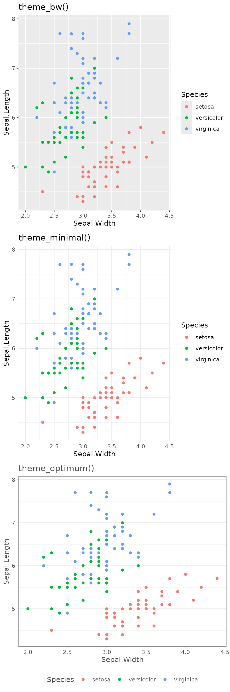

cut2 in LaTeX
A minor thing but one that caused significant headaches is the wonderful cut2() function from Hmisc. cut2() is a more flexible boundary generating function that produces (IMO) better intervals i.e.
- (0,5] is the
cutinterval and this means all numbers greater than 0 and less than or equal to 5 - [0,5) is the
cut2interval and this means all numbers greater than or equal to 0 and less than 5
The cut2 way ensures there are fewer allocation issues due to rounding with a large number of decimal places. Unfortunately when you try to make a table of these in LaTeX, it thinks you’re trying to go into “maths mode”.
To avoid this I wrote a sanitise() function to replace the sanitize() function from knitr so that it will escape any [ characters a table output from R. Whilst I was giving it a UK name (to save function masking issues), I also extended it to correctly handle the GBP symbol (\u00a310) since that was also an issue for us.
Charts
optiRum contains a theme_optimum() (after the company, not an adjective) that changes the ggplot2 default chart look. The ggplot2 themes are good to begin with, and others have extended it further e.g. ggthemes, but we wanted a standard within our company that we could use for charts. There were some considerations:
- colleagues love to print, despite best efforts to dissuade them, but to meet IT halfway they print 4 A4 pages per sheet (2 pages on each side) so the chart labels need to be legible when printed to less than 50% of their intended size
- a lot of our charts are over time and colleagues like to compare values so having y-axis grid lines can aid them
- labels whilst needing to be legible should be de-emphasised to help keep focus on the chart’s message
- as much of the plot area should be given over to the chart as possible so space for legends should be minimised
library(ggplot2)
library(optiRum)
basicplot<-ggplot(data=iris,
aes(x=Sepal.Width, y=Sepal.Length, colour=Species)) +
geom_point()
multiplot(basicplot+ggtitle("theme_bw()"),
basicplot+theme_minimal()+ggtitle("theme_minimal()"),
basicplot+theme_optimum()+ggtitle("theme_optimum()"), layout=matrix(1:3,nrow=3))
Generate PDFs
Using knitr to integrate analysis and content via LaTeX is fantastic. Unfortunately, where our documents using LaTeX via the R package knitr. We can end up with some pretty complex documents that need multiple passthroughs to fully typeset.
Unfortunately, the handy “Compile PDF” button in RStudio, whilst great for simple documents could end up not doing enough passthroughs. At the same time it would generate lots of extra files and you’d have no control over the file name when it was generated.
To get around this I first used build scripts that did a lot of compensating work around the knit2pdf() function to do the various bits and pieces. This became relatively standard but there would be exceptions or different people would write date suffixes differently. generatePDF() is my answer to the various issues we encountered, including some pesky environment interactions with data.table.
generatePDF() takes the following arguments (lots have defaults):
-
srcpathis a folder relative to the current directory so that you don’t have to change working directories -
srcnameis the file name, less the Rnw extension, as it was easier to type plus enforced the use case -
destpathis the output folder, again relative to the current directory, to give better routing as we rarely wanted the PDF among the source code -
destnameis the file name we want the document output as (less.pdf) so that we’re no reliant on the source file’s name -
DATEDgives a date suffix to the file meaning different versions can generated over different days with unique file references (enabling the way some folks were, or provided model variants over time) -
CLEANUPsays whether to remove all the pesky extra files that generating a PDF can produce -
QUIETallows you to produce a PDF with less console activity, making it less burdensome for automated tasks - more like environment and passthroughs to
knit2pdf()
The best place to check out examples of the generatePDF() are in the unit tests.